Ward's Model
Ward's Model of Anisotropic Reflection
Ward's model was first published in a SIGGRAPH paper in 1992, along with a measurement method for anisotropic reflection.
Figure 1: Implementation of Ward's anisotropic BRDF.
Figure 2: Illumination shading based on Ward's paper [9].
Ward's model aimed "not to present the ultimate mathematical model of reflectance" [3, p. 1], instead aiming to create one which fit measured reflectance data accurately, whilst maintaining mathematical simplicity, allowing faster rendering and implementation. Ward defined both an isotropic and anisotropic model. However, as we want to focus on applying his model to scratched metals, we will explore his anisotropic model, which allows the rendering of anisotropic effects such as scratches in the surface of the metal, the direction of which combined with the viewing angle around the normal to the surface can change the surface appearance.
As this model is used to model anisotropic reflection, three axes must be defined: we define the z-axis as the same as the normal vector from that point on the surface, whilst the x and y axes are tangential to the surface in perpendicular directions to each axis.
The Ward BRDF is defined by two components: a diffuse reflection term and a specular reflection term. The diffuse reflection is modelled by ρd, which represents the diffuse reflectance, and the constant π, and is derived from Lambertian's model of diffuse reflectance. Our BRDF so far can be written as:
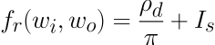
where Is is equal to the specular reflection term, which will be defined.
The specular reflection term is more complex, and to help to understand the three constants defined in the equation, we can look at the concept of specular lobes. Lobes refer to the shape of the specular reflection formed by light reflected off the surface of an object, which forms a lobe shape distributed normally about the ideal specular direction with standard deviations of 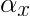 in the x direction and 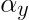 in the y direction [2], [3], [7]. On mirror-like surfaces, the width of the lobe is thinner, creating a specular reflection covering a smaller area. Conversely, on rough surfaces, the width of the lobe is larger, with the distribution of light intensity centred around the angle of reflection [8], due to the many microfacets within the surface. While the width of the lobe represents the area covered by the specular reflection, the magnitude of the lobe represents the intensity of light at that direction.

Figure 3: Specular lobe created about R, the direction at which light in direction L is reflected on a mirror surface.
The three constant parameters defined in the equation:
- 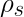 - specular reflectance, describing the proportion of incident energy reflected by the specular component (determines lobe magnitude [2])
- - standard deviation of surface slope in x direction of anisotropy (can be thought of as width of lobe in one direction)
- - standard deviation of surface slope in y direction of anisotropy (can be thought of as width of lobe in other direction)
If = , then the lobe is isotropic, as it is the same in all viewing directions around the z-axis. The effect of varying these two constant parameters can be seen in Figure 4:
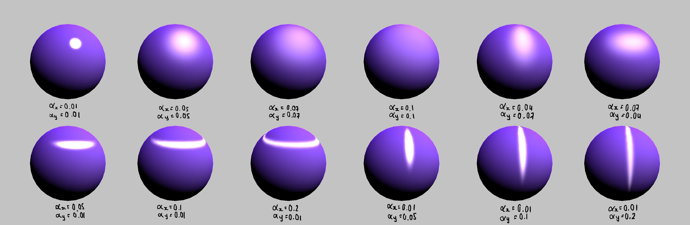
Figure 4: The effect of varying the parameters and on the surface rendering of spheres, shown through various spheres we rendered.
Ward's model includes a visibility term, which is a fraction where the numerator term models geometric factors and is divided by the denominator: two cosine factors modelling foreshortening along the incident and viewing directions, which occurs when the dimensions of an object parallel to the viewing direction appears compressed. The geometric factor is used to account for shadowing and masking, but is largely ignored in Ward's model along with the Fresnel coefficient [5], with the justification that the Fresnel coefficient and geometrical factors tend to cancel each other out, and are difficult to integrate [3]. Therefore, the geometrical factor is set to 1. If we define angles:
- 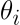 - polar angle between normal and incident direction
- 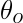 - polar angle between normal and viewing direction
The visibility term is then formed by:
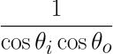
The rest of the equation uses parameters defined by the following angles:
- 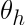 - angle between half vector and surface normal
- 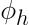 - azimuthal angle of half vector
where the half-angle vector 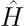 is a unit vector which bisects the incident direction of light and reflected direction, and is equal to the normal vector of a surface which perfectly reflects light from the light soure to the viewer.
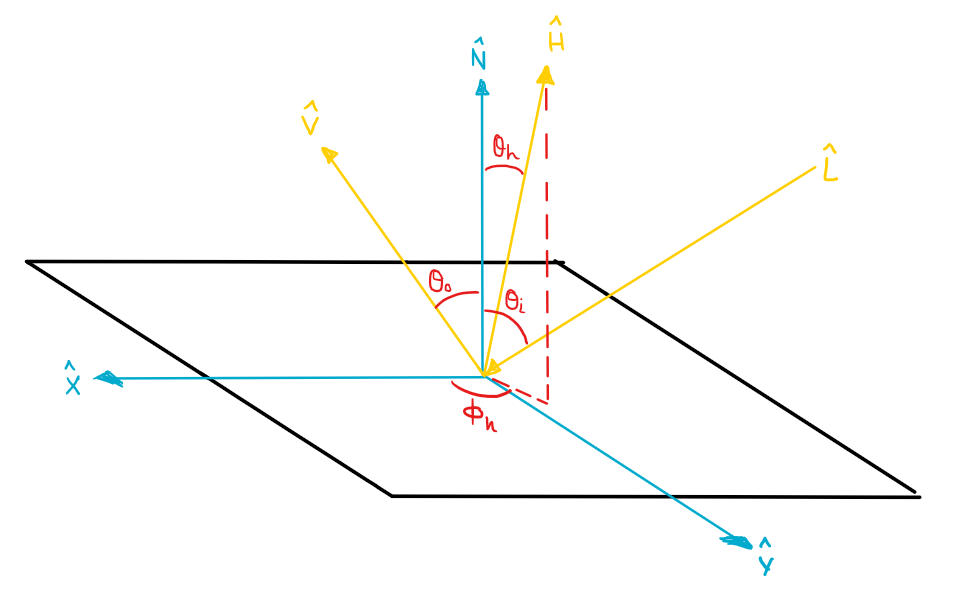
Figure 5: Diagram depicting the various angles and vectors relevant to Ward's model.
Ward's BRDF equation as described so far, without normalisation, is as follows:
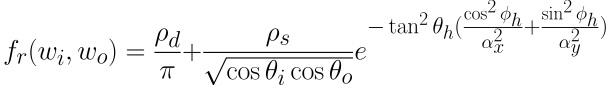
Lastly, Ward's model uses an approximate normalisation term, 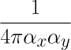, which ensures the BRDF is energy-conserving [1]. As 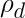 + is equal to the fraction of total incident light reflected by the surface, the normalisation term is defined such that + ≤ 1 [7]. This normalisation term has the effect of reducing the magnitude of the lobe (specular reflectance) as the width of the lobe increases, ensuring energy is conserved. The final BRDF is then produced [2], [3]:
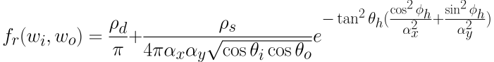
Normally the constants and for the surface slope are set by the user or obtained by fitting measured BRDF, instead of measuring the object surface [1].
Ward's original paper also provided an approximation to his BRDF expressing the angles as the results of their scalar dot product, which is intended to be computationally cheaper. It can be written as follows [3], [6]:
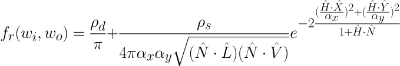
Advantages of Ward's Model
Ward's model overcomes the main issues with Phong's model, ensuring the reciprocity and energy-conserving features of a BRDF are maintained [3]. Additionally, each constant parameter in the model corresponds to a physical meaning, as Ward intended. The advantage of this is that the values for these parameters can be set independent of measured data if necessary to provide a valid BRDF.
When Ward tested his model and its rendering, he found that it accurately fit a wide variety of materials including metals with different textures such as brushed aluminium, rolled brass and rolled aluminium [3].
Ward's model is also fairly fast to use. Table 1 shows the relative speed of several reflectance models for a variety of surfaces, measured in terms of the time taken to model ideal specular and diffuse reflectance. Ward's model has a relative cost of 7.9 cycles, in comparison with the Cook-Torrance model, which has a relative cost of 16.9.
Table 1: Table showing relative cost of various BRDF models [4].
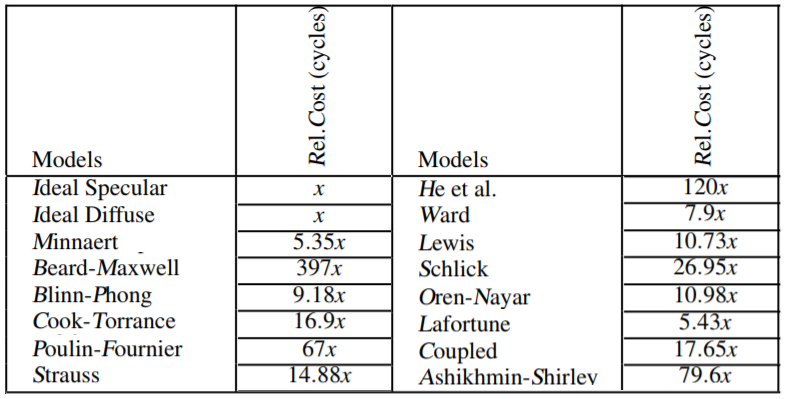
Limitations of Ward's Model
One of the limitations is that the normalisation factor is only accurate for values 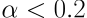, after which the approximation becomes poor, and energy is not conserved as the visibility term tends to infinity, making the reflectance too high [5]. However, for this value of alpha, the surface can be mostly modelled by diffuse reflectance instead [1], and so the effects of this limitation can easily be overcome.
Additionally, there are still many materials which did not fit the BRDF defined by Ward, as his model does not account for many real-world reflectance properties, including Fresnel effects, specular spikes, and off-specular peaks [7]. Some of these are fulfilled by more complex models, such as the HTSG (He, Torrance, Sillion and Greenberg) BRDF, which have been verified through experiments for a wider range of materials. However, the usefulness of such models is largely limited by the computational complexity of implementing them.
References:
[1] J. Dorsey, H. Rushmeier and F. Sillion, Digital Modeling of Material Appearance. San Francisco: Morgan Kaufmann Publishers Inc, 2008.
[2] B. Walter, "Notes on the Ward BRDF," Cornell Program of Computer Graphics., Cornell Univ., New York, Tech. Rep. PCG-05-06, 2005.
[3] G. J. Ward, "Measuring and Modeling Anisotropic Reflection," in Computers Graphics, ACM SIGGRAPH'92 Conference Proceedings, Chicago, IL, 1992, pp.265-272.
[4] R. Montes and C. Ureña, "An Overview of BRDF Models," Dept. Lenguajes y Sistemas Informáticos., University of Granada., Granada, Spain, Tech. Rep. LSI-2012-001, 2012.
[5] T. Akenine-Möller, E. Haines and N. Hoffman, Real-Time Rendering, 3rd ed. Boca Raton: CRC Press, 2015.
[6] Wikibooks. GLSL Programming/Unity/Brushed Metal [Online]. Available: https://en.wikibooks.org/wiki/GLSL_Programming/Unity/Brushed_Metal. [Accessed: 10-Mar-2018].
[7] R. O. Dror, "Surface Reflectance Recognition and Real-World Illumination Statistics," Ph.D. dissertation, Dept. Elec. Eng. and Comput. Sci., Massachusetts Inst. Technol., Cambridge, MA, 2002.
[8] Scratchapixel. The Phong Model, Introduction to the Concepts of Shader, Reflection Models and BRDF [Online]. Available: https://www.scratchapixel.com/lessons/3d-basic-rendering/phong-shader-BRDF. [Accessed 11-Mar-2018].
[9] M. Panknin. (2011, Dec. 20). Metal Shading - Ward's Anisotropic Reflectance Model in Unity3D [Online]. Available: http://blog.mpanknin.de/?p=769. [Accessed 10-Mar-2018].